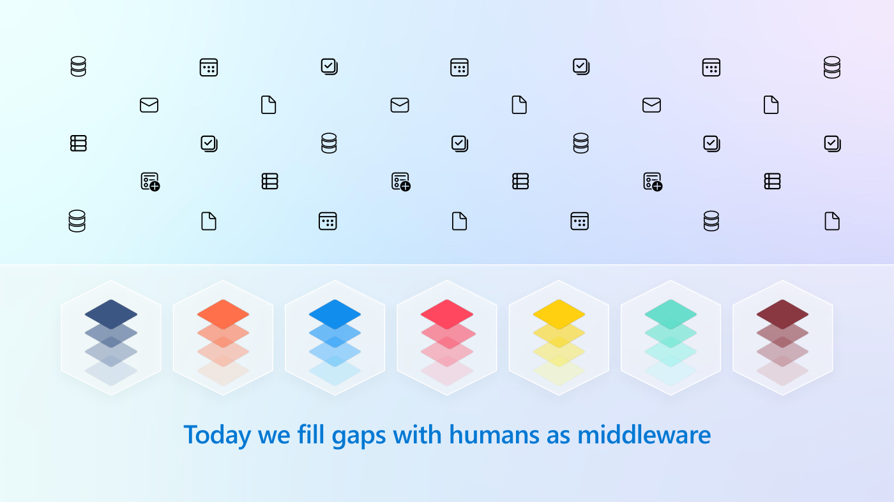
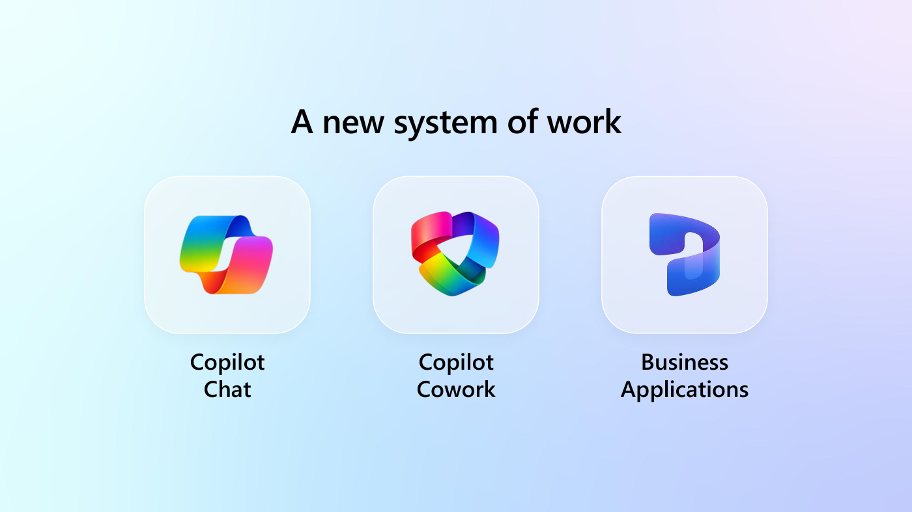
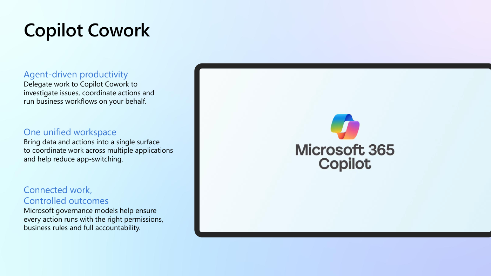
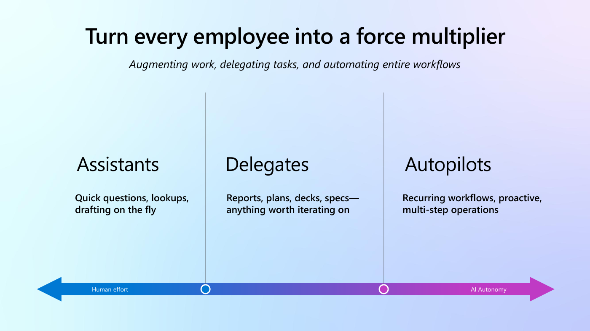
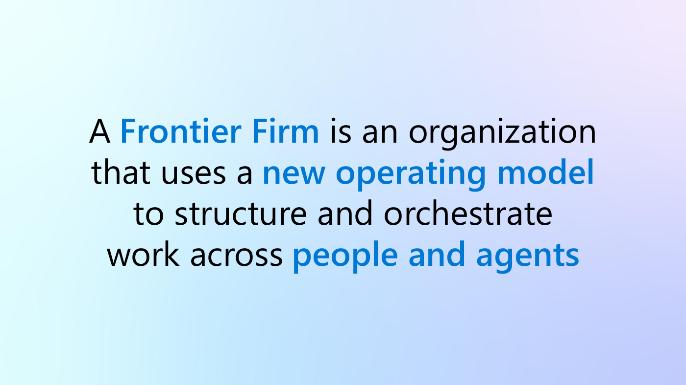
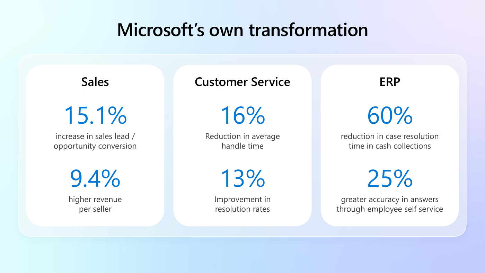
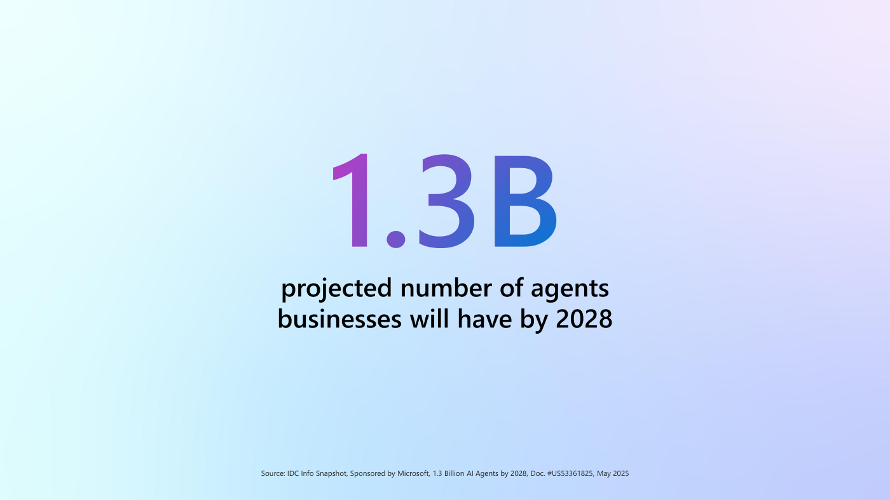
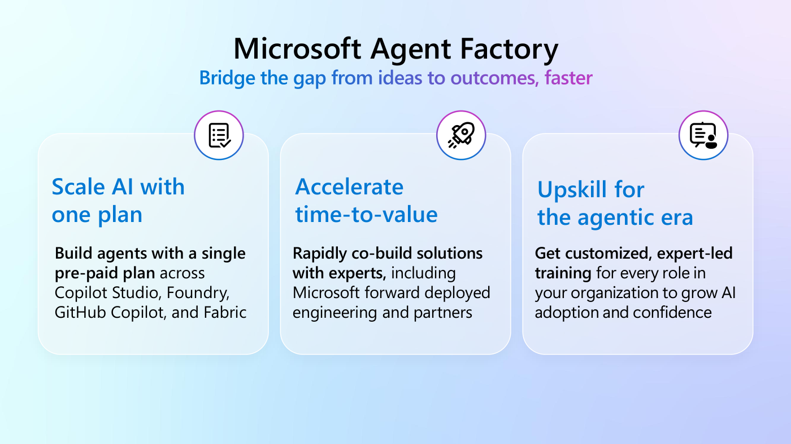

MICROSOFT FRONTIER · מושב הפתיחה · 14.9.2026
ישבתי במושב הפתיחה של שבוע הטרנספורמציה של מיקרוסופט, קראתי את שלוש המצגות, את הצ׳אט הרשמי ואת התמליל המלא. כאן רק מה שנאמר, עם שם של מי שאמר אותו.
כל מה שמיקרוסופט אומרת על עצמה מסומן ככזה. מספר בלי מקור לא נכנס לכאן, ומספר עם מקור ממומן מגיע עם הסייג צמוד אליו. בסוף יש פרק שלם על מה שאסור לקחת מהמושב הזה, והוא החשוב ביותר בדף.
העבודה האמיתית מפוזרת בין מערכות: CRM, ERP, מערכת כוח אדם, מערכת שירות, מחסן. השקף שבא אחריו אמר את מה שכולם יודעים ולא אומרים בקול, שהיום מי שמחבר בין המערכות האלה הוא בן אדם.

וזה גם המבנה שהם מציעים במקום: שלוש שכבות שעובדות על אותם נתונים. צ׳אט לשאלות, Cowork לעבודה מואצלת, והאפליקציות העסקיות עצמן.

נכנסתי למושב עם שאלה אחת פתוחה: מה זה Cowork ובמה הוא שונה מקופיילוט הרגיל. התשובה הכי נקייה שנאמרה שם לא הגיעה מהבמה אלא ממשתתף בצ׳אט, והמנחה אימץ אותה במלואה.
בקופיילוט המשתמש יודע את התהליך ומתקשר אותו, והכלי מאיץ את הביצוע. ב-Cowork המשתמש מתקשר את התוצאה הרצויה, והכלי מתזמר את העבודה, בוחר את הכלים והסוכנים, ופונה למשתמש כשנדרש שיפוט או אישור.
נוסח על ידי משתתף, אומץ על ידי המנחה

הצריכה מחויבת בנפרד בקרדיטים, לפי עצימות השימוש ולא לפי מספר המשתמשים. זו עלות שנייה מעל הרישיון, והיא לא צפויה מראש.
ויש כאן אי התאמה בין שני מקורות רשמיים, ואני לא מיישב אותה:
שתי הגרסאות מסכימות על הכסף. הן נבדלות רק בשאלה אם צריך רכש נפרד. השאלה שסוגרת את זה: האם קיים SKU נפרד לרכישה, או שזה נדלק על מושב קיים והמונה מתחיל לרוץ.
ובלשונו, השיקול אינו מספר המשתמשים אלא עצימות ההרצה והתזמור.
שש יכולות שעלו רק בדיבור ובצ׳אט. מי שקורא את המצגת בלבד מפספס אותן.
שתי הראשונות מקבילות כמעט אחת לאחת למה שאמזון הציגה בכנס שלה שבוע קודם, בדמות Quick Desktop ו-Flows.
המסגרת של זואי האטוף היא מפת החלטה ברמת המשימה, ולא סולם בשלות ארגוני. אפשר לעבוד בשלוש הדרגות באותו יום.

בניסוח שנאמר: Assistants תומכים בעבודה קיימת דרך שאלות, שליפות וניסוח. Delegates לוקחים תוצרים איטרטיביים כמו דוחות ותוכניות. Autopilots מריצים תהליכים חוזרים ורב שלביים בפיקוח מועט. ככל שהאוטונומיה עולה, המאמץ האנושי עובר מביצוע לכיוון.

הוא נותן זהות, מדיניות, אבטחה ונראות. הוא אינו מארח ואינו מריץ את לוגיקת הסוכנים. הזהות ניתנת דרך Microsoft Entra Agent ID.
והחלק שמפתיע: הפלטפורמות שהוא מנהל כוללות Azure AI Foundry, Copilot Studio, Semantic Kernel וגם AWS Bedrock. כלומר שכבת הממשל של מיקרוסופט מנהלת גם סוכנים שרצים על הענן המתחרה.
אחסון נתונים בגבול הנתונים של האיחוד האירופי אינו אומר עיבוד בלעדי באיחוד. שלושת הגורמים הקובעים הם אזור הטננט, האם Flex Routing מושבת, ואיזה מודל מותר בטננט.
ולגבי אנתרופיק בתוך קופיילוט: Claude הוא קבלן משנה של מיקרוסופט וכפוף להסכמי האבטחה והפרטיות שלה, ואדמין יכול להשבית מודלים של אנתרופיק ברמת הטננט כולו ממרכז הניהול. תאריך זמינות באירופה טרם הוכרז.
אלה המספרים היחידים מהמושב שאפשר לצטט, כי לכל אחד יש ארגון מאחוריו. כולם דווחו על ידי מיקרוסופט או על ידי הלקוח מהבמה, כלומר הם עדות ולא מדידה בלתי תלויה.
| ארגון | מה נעשה | מה דווח |
|---|---|---|
| Nestlé | קופיילוט לצד Nest GPT, כלי פנימי שצוות החדשנות בנה לפני שנים | יותר מ-80,000 משתמשים פעילים בחודש, מתוך כ-120,000 עובדי ידע |
| Adecco | קופיילוט בעבודת המגייסים, לצד אקדמיית AI פנימית | האקדמיה הכשירה יותר מ-12,000 איש בעשר מדינות, יותר מ-35,000 עברו הכשרה על AI אחראי, ודווח על 63 אחוז יותר פרודוקטיביות |
| Visa | סוכנים מובנים ב-Dynamics 365 Customer Service | כמעט 75 אחוז שיפור בשביעות רצון, וכמעט 90 אחוז פחות זמן ליצירת מאמרי ידע |
| Hertz | סוכן מותאם שנבנה ב-Copilot Studio לסיוע בדרכים | 15 אחוז פחות זמן פתרון |
| Heineken | פיתוח יישומים ב-Power Platform | יותר מ-10,000 יישומים, כ-3 מיליון שעות חיסכון |
| Microsoft על עצמה | מכירות, שירות ו-ERP | כ-10 אחוז יותר הכנסה לאיש מכירות, לפחות 16 אחוז פחות זמן טיפול ממוצע, 60 אחוז פחות זמן לסגירת בעיית גבייה |

והדבר שהכי שווה מכל הרשימה הזאת הוא דווקא נסטלה, ולא באופן שמיקרוסופט התכוונה. 80,000 המשתמשים הם על קופיילוט וגם על Nest GPT במקביל. לקוח הדגל של האימוץ מריץ שני כלים, לא אחד.
ופול סונדרס מנסטלה, כשנשאל על חסמים, ענה ממשל ותאימות. בלשונו, הצוות שלו שונא סיכון ורוצה שהכל יהיה מאובטח בתכנון. הוא מנה גם אמון משתמשים ואיכות נתונים.
הוא חי בשוויץ וכותב באנגלית, ורוצה שהתשובה תהיה רלוונטית לו ולא למישהו במדינה אחרת.
פול סונדרס, נסטלה, על בעיית העיגון
זו בדיוק הבעיה שאנחנו מתארים בעברית, בגרסה גיאוגרפית. כלומר היא לא בעיה ישראלית אלא בעיה של כל ארגון רב לאומי.

המחקר ממומן על ידי מיקרוסופט, וזה כתוב על השקף עצמו באותיות קטנות. מי שמצטט את המספר חייב לומר את זה, אחרת מספיק שאדם אחד בחדר יבדוק והטיעון כולו מאבד גובה.
שני מספרים חיצוניים נוספים שנאמרו מהבמה: גרטנר, שסוכנים ייעודיים למשימה יהיו בכ-40 אחוז מיישומי הארגון עד סוף 2026 לעומת 5 אחוזים שנה קודם. ו-Work Trend Index של מיקרוסופט, עם מה שהם מכנים פרדוקס הטרנספורמציה, שבו האנשים מוכנים והארגונים סביבם אינם.

לא נמסרו לה שום תנאים מסחריים. אין מחיר, אין סף מינימלי, ולא נאמר אם התוכנית מחליפה רישוי לפי מושב או מתווספת עליו. וגם לא נאמר מי בפועל מעביר את ההכשרה שלה, מיקרוסופט או שותפים. זו השאלה הפתוחה החשובה ביותר מהמושב, ואני אשאל אותה שוב ביום רביעי.
הסיכום שנוצר מההקלטה כתב "גיא כהן תיאר" ו"גיא כהן בחר תוספים של דיינמיקס". לא אמרתי אף אחד מהמשפטים האלה. אלה זואי האטוף וקארן ניגאם. הסיבה פשוטה: ההקלטה נעשתה מהחשבון שלי, והכלי הניח שהדובר הוא בעל החשבון.
אם הייתי מעלה את הקובץ כמו שהוא למאגר ידע, המאגר היה לומד שאני אמרתי את זה, וזה היה חוזר אלי בתשובות חודשים אחר כך. תבדקו ייחוס דוברים לפני שאתם מזינים תמלול לאיזשהו מקום שזוכר.
המנחים והמומחים של מיקרוסופט ענו לאורך המושב בצ׳אט. אלה השאלות שהתשובה עליהן הוסיפה משהו, מתורגמות לעברית. שאלות לוגיסטיות על הקלטות והרשמות הושמטו. פתח שאלה כדי לראות את התשובה.
התשובות הן של מיקרוסופט על המוצר שלה. הן עדות ולא אימות חיצוני, ובמקום אחד הן סותרות זו את זו, וגם זה כתוב.
כאן יש שתי תשובות רשמיות שאינן זהות, ושתיהן ניתנו באותו מושב. האחת אומרת ש-Cowork אינו כלול ברישיון Premium, ושהרישיון הזה הוא תנאי מקדים לרכישת מנוי pay-as-you-go נפרד. השנייה אומרת שהגישה כלולה ברישיון הקיים, אבל השימוש בפועל נמדד ומחויב בנפרד דרך Copilot Credits. שתיהן מסכימות שמושב הרישיון אינו מכסה את השימוש. הן נבדלות רק בשאלה אם נדרש פריט רכש נפרד.
לפי המנחה, חמישה דברים: נפח ההקשר ונתוני הגראונדינג, מספר הפעלות הסוכן באותו תהליך, אורך היסטוריית השיחה והזיכרון, משימות ניסוח וחשיבה מורכבות, וקריאות למערכות ומחברים חיצוניים. בלשונו, השיקול אינו מספר המשתמשים אלא עצימות ההרצה והתזמור.
כן. קיים סקיל בשם /cost.
Copilot Chat מורשה דרך רישיון Copilot Premium או בתשלום לפי שימוש. Cowork עובד על קרדיטים לפי צריכה, כשרישיון Premium הוא תנאי לתוספת הצריכה.
תלוי במודל הרישוי. אפשר להשתמש ב-Copilot Chat ובסוכנים במודל pay-as-you-go בלי רישיון Premium, ואז משלמים על כל אינטראקציה בנפרד.
המנחה הסכים עם הקושי. אימוץ בלי ממשל אינו בר קיימא, והאתגר הוא לזהות את המקרים שבהם Cowork מייצר פי עשרה ערך ולא רק פי עשרה צריכת טוקנים.
המנחה אישר שזו בעיה מוכרת. התמחור נפרס היום בין רישיונות, קרדיטים, סוכנים מובנים וסוכנים מותאמים, והוא עצמו אמר שהוא היה רוצה מחשבון עלות מאוחד שמאפשר לארגון לדמות שימוש אמיתי. כלומר, אין כזה היום.
ככל שקופיילוט עובר למודל צריכה, ניטור ומעקות הופכים קריטיים. use case שנראה פשוט יכול להיות יקר אם הוא מושך הרבה הקשר, מפעיל כמה סוכנים, או מבצע חשיבה מורכבת. נדרשת אותה משמעת שכבר מופעלת על הוצאות ענן.
התשובה מהבמה: אם Cowork עולה שלושים דולר למשתמש לחודש וחוסך למנהל לקוחות או אנליסט שעה אחת בשבוע, הרבה ארגונים מוצאים שהתפוקה מצדיקה את העלות. השאלה אינה כמה זה עולה אלא איזה ערך זה פותח לתפקיד הזה.
לפי התשובה, אלה פותרים בעיות שונות. Cowork כשיש אדם בלולאה שרוצה לשאול, לחשוב על מידע, לייצר תוכן ולפעול על פני נתוני 365. Copilot Studio ו-Power Platform כשצריך תהליך עסקי חוזר: עיבוד מסמכים, אישורים, אינטגרציות, תזמור וסוכנים מחלקתיים בקנה מידה. כלל אצבע שנאמר: Cowork מגביר אנשים, Power Platform מבצע תהליכים. הפתרונות הבשלים משלבים את שניהם.
ההבדל הוא אוטונומיה. היום קופיילוט עוזר לך לייצר מסמך או מצגת. Cowork מתזמר כמה משימות, סוכנים ופעולות על פני מערכות כדי להגיע לתוצאה עסקית, עם פחות התערבות אנושית.
אין כפתור התקנה. Sound Like Me הוא דוגמה לסקיל מותאם ולא פיצ׳ר: אוספים דוגמאות מהכתיבה שלך, מגדירים הנחיות והתנהגות, והופכים את היכולת לזמינה על פני שיחות ומשימות. ההתאמה האישית עצמה יושבת היום תחת ההגדרות באפליקציית קופיילוט.
כן, דרך תבניות מיתוג של Copilot Cowork. הופנה לתיעוד ייעודי של מיקרוסופט בנושא.
הדוגמה שניתנה היא רכש. מייצרים קונקטור שחושף פונקציות מהמערכת: פתיחת ספק חדש, בדיקת סטטוס ספק, שליפת פרטי חוזה, אימות מסמכי תאימות, והפעלת תהליך אישור. ואז המשתמש פשוט מבקש לקלוט ספק ולדעת אילו מסמכים חסרים, ו-Cowork עושה את זה מאחורי הקלעים. דוגמאות נוספות: יתרות חופשה במשאבי אנוש, סטטוס חשבונית והזמנות רכש בכספים, בריאות לקוח במכירות, ומלאי ומעקב משלוחים בתפעול.
כן, בתנאי שיש מסלול אינטגרציה. בפועל משתמשים במחברים, ממשקי API, Copilot Studio, Power Platform או חיפוש ארגוני. הגישה שהוצגה היא להביא את הבינה לאן שהנתונים נמצאים ולא להזיז את הנתונים אל מיקרוסופט.
כן, בתנאי שה-CRM חושף את הנתונים והפעולות דרך מחברים נתמכים, ממשקי API או סוכנים. ככל שקל יותר להגיע לנתונים ולתהליכים, כך העבודה מולם טובה יותר.
כן, דרך סכמת Dataverse וההתאמות עצמן. אבל נאמר במפורש שמטא דאטה טובה, הגדרות עסקיות ברורות ופעולות מותאמות הן ההבדל בין סוכן טוב לסוכן מצוין.
הנתונים צריכים להיות מדויקים ומסודרים, אבל לא צריך להעלות אותם. Cowork עובד ישירות מול נתוני שרפוינט, בכפוף להרשאות ולמחברים הזמינים.
התבנית שהוצגה: Work IQ נותן גישה להקשר הארגוני ולנתוני העבודה, Fabric IQ לנתונים הארגוניים והאנליטיים, Foundry IQ מביא תזמור מודלים ויכולות AI, וקופיילוט או Cowork הם שכבת חוויית המשתמש והתזמור מעליהם.
כן. קופיילוט בפאוור BI מייצר דוחות, ויזואליזציות, DAX ואפילו טיוטות דשבורד משפה טבעית. האיכות תלויה במודל סמנטי מסודר ובנתונים מנוהלים.
מיקרוסופט טרם הכריזה על תאריך. עד שיפורסמו פרטי גבול הנתונים והתאימות לאיחוד האירופי, ארגונים עם דרישות GDPR מחמירות צריכים להישען על ההנחיות והתיעוד הקיימים.
התשובה ניתנה בגרמנית ומתורגמת כאן. אחסון בגבול הנתונים האירופי אינו אומר עיבוד בלעדי באיחוד. העברות או עיבוד מחוץ לאיחוד אפשריים בהתאם לתצורה. שלושת הגורמים הקובעים הם אזור הטננט, האם Flex Routing מושבת, ואיזה מודל מותר בטננט.
Claude הוא קבלן משנה של מיקרוסופט, מחויב חוזית לדרישות האבטחה, הפרטיות וה-DPA שלה. אם מיקום עיבוד הנתונים אינו עומד בדרישות הארגון, אדמין יכול להשבית מודלים של אנתרופיק ברמת הטננט כולו ממרכז הניהול.
המפתח הוא שזיכרון הסוכן יישאר תחום להרשאות המשתמש, יהיה ניתן לביקורת, יהיה לו מקור ברור, ויהיה אפשר לרענן או לאפס אותו כשההקשר מתיישן. ממשל זיכרון יהפוך לעמוד תווך ככל שסוכנים ארגוניים יתפתחו.
זו בדיוק הסיבה שממשל הופך קריטי. המטרה אינה מאות סוכנים מבודדים אלא אקוסיסטם מנוהל עם נתונים, אבטחה, זהות, תאימות וניטור משותפים. החזון של Agent 365 הוא שהמשתמש לא יצטרך לדעת באיזה סוכן להשתמש, וקופיילוט יהפוך לדלת הכניסה שמגלה ומתזמרת את הסוכן הנכון מאחורי הקלעים. ונאמר במפורש שארגונים מובילים מקימים מרכז מצוינות לסוכנים כדי למנוע את ההתפשטות הזאת.
הוא שכבת בקרה מרכזית לזהות, מדיניות, אבטחה ונראות, ואינו מארח ואינו מריץ את לוגיקת הריצה של הסוכנים. הזהות ניתנת דרך Microsoft Entra Agent ID, והפלטפורמות שהוא מנהל כוללות Azure AI Foundry, Copilot Studio, Semantic Kernel וגם AWS Bedrock.
אי אפשר להבטיח פלט גנרטיבי זהה, אבל אפשר לתקנן איכות ומבנה: הנחיות ברורות לסוכן, פורמט פלט קבוע, מקורות נתונים מבוקרים, וערכות בדיקה ב-Copilot Studio עם קריטריוני הערכה מוגדרים.
העיקרון שנאמר: להתייחס ל-Cowork כעוזר חשיבה ולא כסמכות. איכות התשובה תלויה באיכות הנתונים, בהרשאות ובעיגון. להחלטות בעלות השפעה יש לבקש מקורות, לאמת מול מערכות הרישום, ולהשתמש בתהליכי אישור. המיקוד עובר מלסמוך על התשובה ללסמוך על התהליך.
כן, ובניסוח שנאמר: להשתמש ב-AI כמבקר שני ולא כסמכות אחרונה. לבקש ממנו לבדוק טענות מול נתוני המקור, לסמן אי ודאות ולערער על הנחות. להחלטות חשובות לדרוש ראיה מצוטטת ואישור אנושי לפני שליחה.
המנחה אישר שזה סיכון אמיתי. לדבריו, כשהתשובה חוזרת שבועות אחר כך, קיים סיכון שאדם יאשר מסר שהוא כבר לא מבין מספיק כדי להגן עליו. נדרשים מקור, עקיבות וזיכרון הקשרי, אחרת נוצרות החלטות שהבעלות עליהן פרוצדורלית ולא קוגניטיבית.
כן. יש תקופות ניסיון, סביבות מפתח, חוויות ארגז חול ב-Microsoft Learn וטננטים לניסיון עבור Copilot Studio, Power Platform, Fabric ושירותי Azure AI. נקודת התחלה טובה היא Microsoft Learn וסביבת הניסיון של Copilot Studio.
התשובה המעשית שניתנה: להתייחס לזה כפיילוט מבוקר, להגדיר ספי עלות ובעלות, לנטר כל תלות מדידה, ולהסלים את פערי התמחור למיקרוסופט.
כן, ובניסוח שנמסר: להתייחס לאקדמיה כמסע ולא כתוכנית חד פעמית. הרכיבים שנמנו הם מודעות ומוכנות הנהלה, מסלולי למידה לפי תפקיד למשתמשים עסקיים, מנהלים, מפתחים, IT ונתונים, מעבדות וארגזי חול עם תרחישים אמיתיים, שילוב תוכן Microsoft Learn והסמכות בתוך פלטפורמת הלמידה של הארגון, אתר אימוץ מרכזי שמכיל תרחישים, שאלות נפוצות, ספריית פרומפטים, הנחיות ממשל ושעות קבלה, קהילת צ׳מפיונס, והכשרה על הרשאות, תאימות והגנת מידע.
הסדר שנמסר: להגדיר תוצאות עסקיות ואיך מודדים אותן, להכין נתונים וממשל, לבנות אוריינות עם הנהלה ורשת צ׳מפיונס, להתחיל ממעט תרחישים בעלי ערך גבוה, לפלט וללמוד, להרחיב עם סוכנים ואוטומציה, ולמדוד באופן מתמשך. בקיצור: חזון, ממשל, מיומנויות, תרחישים, פיילוט, סקייל, מדידה.
לפי התשובה, הפערים כמעט אף פעם אינם טכניים. פיילוט משגשג על התלהבות וגמישות, וסקייל דורש בעלות ברורה, ממשל, נתונים אמינים, אינטגרציה וערך מדיד.
התשובה שנמסרה היא מודל היברידי. מודלי החזית יישארו מנוע החשיבה למשימות מורכבות, ומודלים קטנים וייעודיים יטפלו ביעילות בתהליכים תחומיים. המנצח יהיה התזמור ביניהם.
לא ישירות. ב-VS Code חוויית הקוד היא GitHub Copilot. קופיילוט של 365 משלים סביבו: דרישות, תיעוד, פגישות והקשר עסקי.